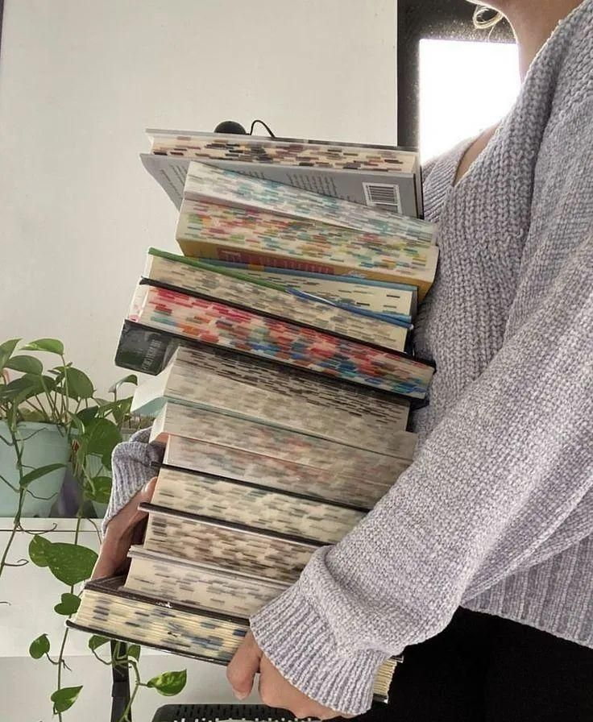

If you're someone who loves escaping into different worlds through books and movies (same), then you've come to the right place!
I'm 18 and always diving into fantasy novels or rewatching early 2000s romcoms like it's a hobby. Every month, I update my blog with the books l've explored and the films I've laughed and cried over-because nothing beats a good story, whether it's in a book or on the screen. And if you're into cats and all things girly, then we're definitely on the same page.